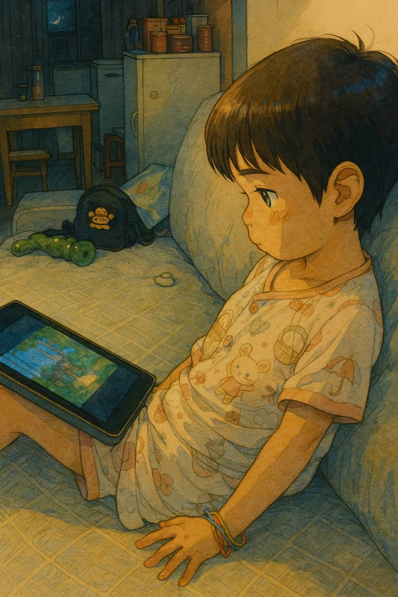

मेरी बेटी का एनिमेशन सफर | मूल, AI द्वारा अनुवादित
 स्रोत: chatgpt.com
पिछले कुछ वर्षों से मैं चीन के गुआंगज़ौ में रहा हूँ। जब मैं 2022 में तियानहे सीबीडी में काम कर रहा था, एक दिन मैं ऑफिस बिल्डिंग गया और एक आस-पास के रिहायशी सोसायटी के पार्किंग स्पॉट में गाड़ी खड़ी की। मैंने एक पिता को देखा जो अपने बेटे को लिफ्ट में प्रवेश कराने में मदद कर रहा था और उस समय उसे iPad पर अंग्रेज़ी में सवाल पूछ रहा था। उसका बेटा अंग्रेज़ी में जवाब दे रहा था। उसका बेटा काफी छोटा था, शायद 4 या 5 साल का। उस समय मैं काफी प्रभावित हुआ था।
उस समय वहां के घरों की कीमत 60 लाख या 1 करोड़ CNY थी। वे काफी महंगे थे। इसलिए वे काफी अमीर थे। और वे अपने बच्चों की शिक्षा पर बहुत ध्यान देते थे। मैंने सुना था कि लोग अपने अगली पीढ़ी को सफल बनाने के लिए मेहनत करते हैं। मैंने वास्तव में वास्तविक जीवन में ऐसा दृश्य नहीं देखा था।
एक बात यह है कि जब मैं 20 से 25 साल का था, तब मैंने अपने जीवन में बहुत कम बच्चे देखे थे। लेकिन जब मेरे खुद के बच्चे हुए, तो मुझे एहसास हुआ कि बच्चे हर जगह हैं।
पिछले कुछ वर्षों से मैंने विदेशी बैंकों के लिए ठेकेदार के रूप में काम किया है, जिससे मेरा अंग्रेज़ी में काफी सुधार हुआ है, और मैं इसे काम पर या व्यक्तिगत अध्ययन के लिए उपयोग करता हूँ।
मैं अपने बेटी के लिए भी अंग्रेज़ी सीखना प्राथमिकता मानता हूँ। मेरी बेटी का जन्म 2021 में हुआ था। दिसंबर 2023 में, मैंने वीचैट वीडियो पर अपनी बेटी का एक वीडियो पोस्ट किया जिसमें वह “बेबी शार्क डू डू”, “फिंगर फैमिली” गा रही थी और अपने उंगलियों को गिनती हुई थी, साथ ही “हैप्पी बर्थडे टू यू” भी। इस वीडियो को मेरे सामान्य वीडियो की तुलना में अधिक लाइक्स और व्यूज मिले।
उस समय वह केवल 2 साल की थी। और मुझे लगता है कि वह चीन में इसी उम्र के अन्य बच्चों के लिए काफी प्रेरणादायक है।
इस तरह गाना आसान नहीं है। चीन में यूट्यूब किड्स तक पहुंचना आसान नहीं है। वे ग्रेट फायरवॉल द्वारा ब्लॉक किए गए हैं।
इसलिए मैंने एक Apple TV और एक Fire TV Stick खरीदा। इन तक पहुंच न पाने से मेरे और मेरे माता-पिता के बीच झगड़े होते हैं। मेरे माता-पिता चाहते हैं कि मेरी बेटी को चाइनीज़ एनिमेशन दिखाए जाएं। हालांकि, मैं चाहता हूँ कि उसे अंग्रेज़ी एनिमेशन दिखाए जाएं।
और कभी-कभी, अगर Apple TV या Fire Stick के लिए VPN प्रॉक्सी काम नहीं करता है, तो मेरे माता-पिता इसे ठीक नहीं कर पाते। मेरी पत्नी भी नहीं कर पाती। और ऐसे समय में, अगर मेरी बेटी अभी भी अंग्रेज़ी एनिमेशन देखना चाहती है और मैं उपलब्ध नहीं हूँ, तो वह इसके लिए रोने लगती है।
शुरू में, मेरे माता-पिता समझ नहीं पा रहे थे कि मैं ऐसा क्यों कर रहा हूँ। वे सोचते हैं कि चाइनीज़ भी ठीक है। मैं जानता हूँ। लेकिन आज के समाज में, प्रतिस्पर्धा बहुत अधिक है। वह चीन में बड़ी हो रही है, इसलिए वह निश्चित रूप से चाइनीज़ सीख जाएगी। हालांकि, अंग्रेज़ी शिक्षा वह चीज़ है जिससे वह वंचित रह सकती है। मैंने अपने 20 के दशक में इस भाषा को सीखने में कई साल बिताए। इसलिए अगर वह 20 साल की उम्र से पहले IELTS 7 हासिल कर लेती है, तो वह अंतरराष्ट्रीय कॉर्पोरेट दुनिया में अच्छा प्रदर्शन करेगी।
और मेरी पत्नी के साथ कई बार बहस होती है कि मैं उसे अपना दूसरा मोबाइल फोन—एक Google Pixel—अंग्रेज़ी एनिमेशन देखने के लिए ज्यादा नहीं देना चाहिए। मुझे लगता है कि यह कोई समस्या नहीं है क्योंकि मैं मायोपिया को ठीक कर सकता हूँ। कृपया मेरा पेपर देखें।
दूसरों की राय बदलना वास्तव में मुश्किल है, जिसमें रिश्तेदार भी शामिल हैं। अपनी बेटी की अंग्रेज़ी में प्रगति देखकर, वे अंग्रेज़ी एनिमेशन दिखाने को स्वीकार करने लगे।
कुछ लोग कहते हैं कि मोबाइल फोन लोगों के डोपामाइन सिस्टम को खराब कर रहे हैं। हमें छोटे बच्चों को शुरुआती उम्र में डिजिटल डिवाइस छूने नहीं देने चाहिए।
मुझे वास्तव में ऐसा नहीं लगता। अंग्रेज़ी एनिमेशन और अंग्रेज़ी वातावरण में क्या अंतर है? अंग्रेज़ी वातावरण तो बस एक भौतिक और वास्तविक अंग्रेज़ी एनिमेशन है। रंगीन दृश्यों से दिमाग उत्तेजित हो सकते हैं। लेकिन रंगीन खेल के मैदान के बारे में क्या?
जेफ्री हिंटन और एलोन मस्क जैसे लोग, जो 4 दशकों से डिजिटल तकनीक से जुड़े हुए हैं, क्या डिजिटल डिवाइस उनके दिमाग को बदल देंगे? ये जानकारी रिकॉर्ड और शेयर करने के लिए सिर्फ टूल हैं। यह इस बात पर निर्भर करता है कि आप उनका उपयोग कैसे करते हैं।
और हम अपनी बेटी को यात्रा के दौरान अंग्रेज़ी एनिमेशन दिखाते हैं। मैं अपना दूसरा मोबाइल फोन सीट के हेडरेस्ट में लगाता हूँ, इसे खाली जगह में फंसाकर, ताकि यह गिरे नहीं।
जून 2025 तक, मेरी बेटी के पास लगभग 500 घंटे का अंग्रेज़ी देखने का अनुभव हो चुका है। अप्रैल 2023 से अब तक, दो साल बीत चुके हैं। यह लगभग एक घंटा प्रतिदिन है। हालांकि वह अभी और अंग्रेज़ी गाने नहीं गा पाती, लेकिन हम इसे जानबूझकर अभ्यास नहीं कराते। लेकिन निश्चित रूप से उसका दिमाग बहुत बदल चुका है।
अंग्रेज़ी एनिमेशन के माध्यम से, वह बहुत कुछ जानती है। मुझे नहीं पता कि वह क्या देखती है। अगर हम पूछते हैं, तो वह बता सकती है। और जब हम किसी चीज़ के बारे में बात करते हैं, तो वह कुछ अंग्रेज़ी एनिमेशन से भी इसका जिक्र करती है।
इस पर विचार करें: अगर चीन का हर बच्चा इस तरीके को अपनाना शुरू कर दे, तो 20 साल से भी कम समय में, चीन सिंगापुर की तरह हो जाएगा। ली कुआन यू ने आधी सदी में सिंगापुर को एक अंग्रेज़ी बोलने वाला देश बना दिया।
अच्छी खबर यह है कि हालांकि ग्रेट फायरवॉल चीन और वैश्विक दुनिया को अलग करता है, लेकिन टिकटॉक पर लगभग सभी लोकप्रिय अंग्रेज़ी वीडियो चाइनीज़ वीचैट वीडियो या डौयिन पर भी उपलब्ध हैं, चाइनीज़ कैप्शन के साथ। बहुत सारा सामग्री उपलब्ध है।
जब मैंने एक सिंगापुरी बैंक में ठेकेदार के रूप में काम किया, तो मैंने सुना कि हमारे टीम में कुछ भारतीय सहकर्मी अपने बच्चों के साथ घर पर अंग्रेज़ी बोलते हैं। यह मेरे लिए काफी आश्चर्यजनक था। चीन के बारे में सोचें। त्सिंगहुआ या पेकिंग यूनिवर्सिटी से ग्रेजुएट लोग शायद अपने बच्चों के साथ अंग्रेज़ी बोलने की अनुशासन या संस्कृति नहीं रखते।
लेकिन मुझे लगता है कि भारत के कुछ हिस्सों और सिंगापुर के लिए, यह सामान्य और स्वाभाविक है।
मेरी बेटी भविष्य में जी रही है। शायद एक दिन सभी देशों के सभी बच्चे 2 साल की उम्र से अंग्रेज़ी एनिमेशन देखेंगे। और कुछ पीढ़ियों में, जैसे 2050 तक, 80% आबादी अंग्रेज़ी बोल सकेगी।
 स्रोत: chatgpt.com
स्रोत: chatgpt.com
पेरेंटिंग टिप्स
2025
-
सुरक्षा सबसे महत्वपूर्ण चीज़ है। साधारण जीवन जीएं और सुनिश्चित करें कि किंडरगार्टन या स्कूल सही काम कर रहे हों।
-
उनके दृष्टिकोण को व्यापक बनाएं, उन्हें विविध अनुभवों और यात्राओं के माध्यम से उजागर करें।
-
उन्हें उन चीज़ों के लिए मजबूर न करें जिन्हें वे पसंद नहीं करते और उनकी कठिनाइयों को कम करें।
-
स्वतंत्रता और निर्णय लेने की स्वतंत्रता को प्रोत्साहित करें।
-
यदि आपके पास लचीला जीवनशैली है, तो सोने जैसी गतिविधियों के लिए लचीलाdule रखें।
-
सीखने और जिज्ञासा के प्रति प्रेम को बढ़ावा दें; व्यावहारिक कौशल सिखाएं।
-
उन्हें संभावित खतरनाक स्थितियों को सुरक्षित तरीके से संभालना सिखाएं, बिना अत्यधिक सुरक्षा कवच दिए।
-
उन्हें व्यावहारिक कौशल से लैस करें, जैसे टूल्स का उपयोग करना और तकनीक को समझना।
-
सीखने और अन्वेषण में आत्मविश्वास और निर्भीकता को बढ़ावा दें।
-
उन्हें दूसरों का सम्मान करना और बातचीत में शिष्ट रहना सिखाएं।
-
उन्हें छोटी उम्र से ही अपने फैसले लेने दें।
-
आलोचना न करें; हमेशा प्रोत्साहित करें और सकारात्मक प्रोत्साहन दें।
-
उन्हें आधुनिक तकनीक और टूल्स से परिचित कराएं ताकि वे भविष्य के लिए तैयार रहें।
-
अपने अनुभव और सीख loro साथ साझा करें, और उनके विचारों और विचारोके लिए खुले रहें।
-
उन्हें देखकर और बच्चों और वयस्कों के बीच के अंतर को समझकर उनसे सीखें।
-
उन्हें YouTube Kids एनिमेशन देखने और Apple Arcade और Google Play Pass गेम्स खेलने दें।
-
यूट्यूब प्रीमियम का उपयोग करें और कार में देखने के लिए कुछ अंग्रेज़ी एनिमेशन डाउनलोड करें।
-
3 साल की उम्र से: रिमोट कंट्रोल का उपयोग करना, मोबाइल गेम खेलना, वॉयस के माध्यम से ChatGPT के साथ इंटरैक्ट करना, और डिलीवरी अनपैक करना सिखाएं।